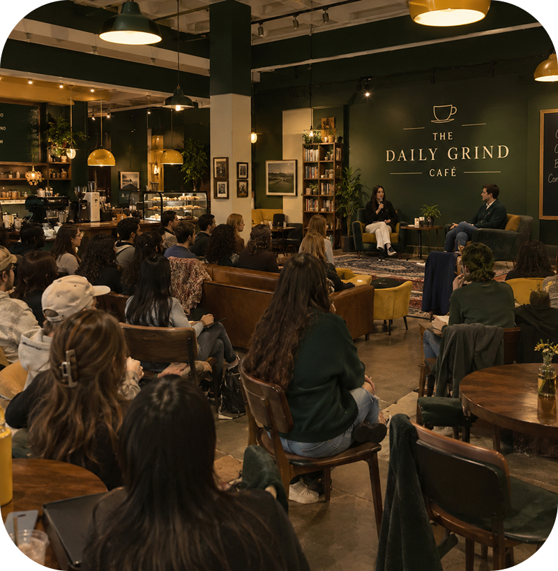
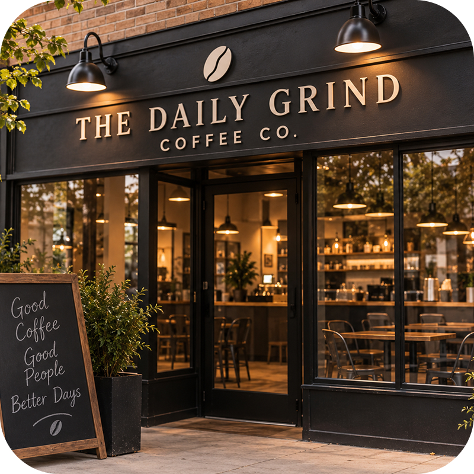
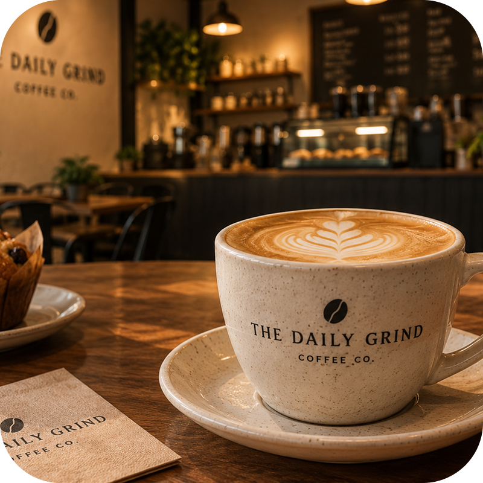
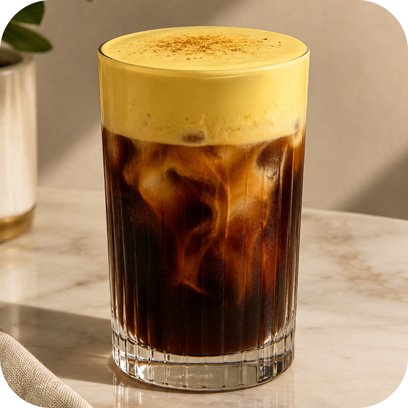
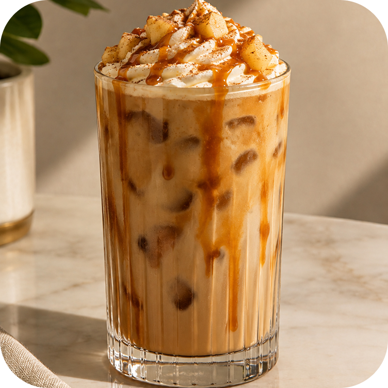
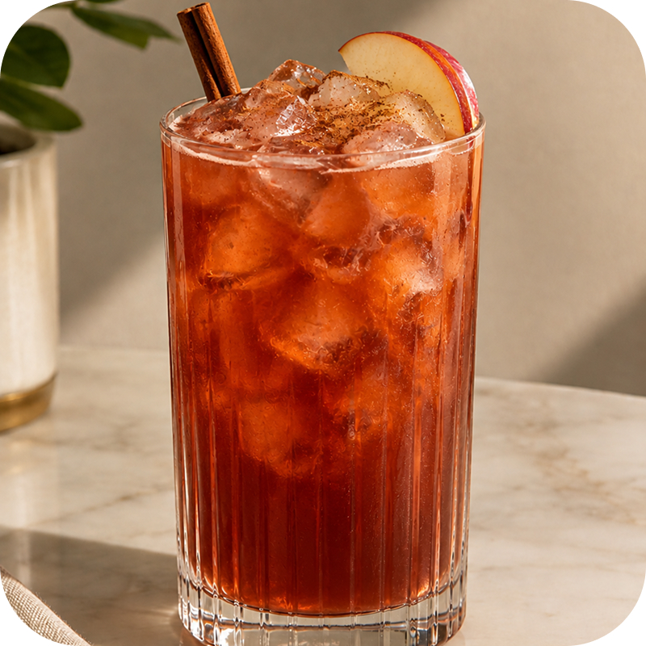
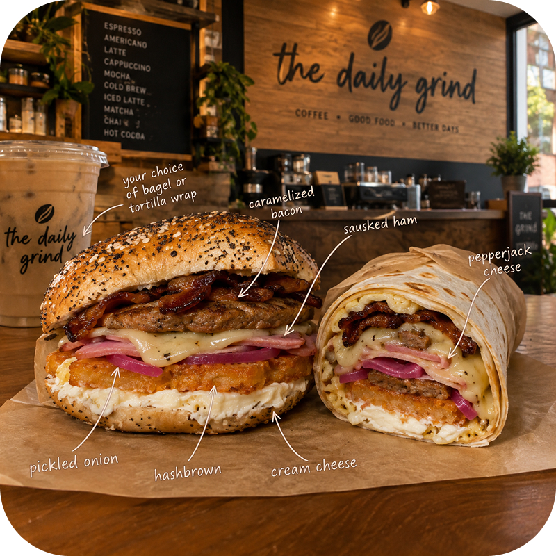
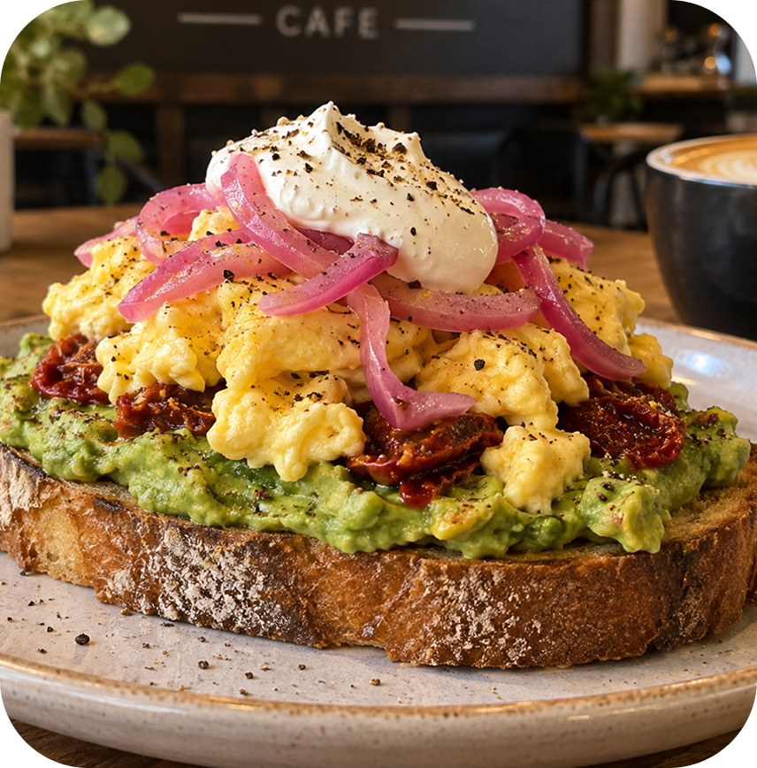
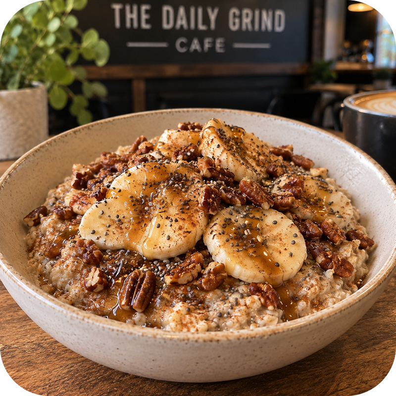

A Taste of The Daily Grind
Take a look inside The Daily Grind Cafe, where great coffee, delicious food, and meaningful conversations come together. From the cozy atmosphere and welcoming community to our handcrafted drinks and freshly made breakfast favorites, every detail is part of the experience. Explore our gallery to get a feel for the space, discover your next favorite drink, and see what makes The Daily Grind more than just a coffeehouse.




Dark ChocolateBanana Bread
Cold Brew

Caramel AppleLatte

Spiced OrchardTea

The MorningRoast

The BrightSide

The Wake UpBowl